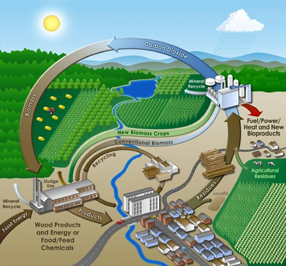
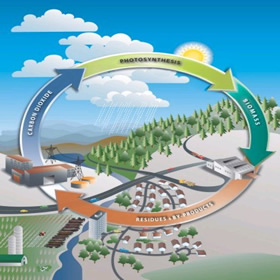
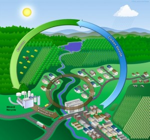

Biomassa
Si intende per biomassa "la frazione biodegradabile dei prodotti,
rifiuti e residui di origine biologica provenienti dall’agricoltura (comprendente sostanze vegetali e animali),
dalla silvicoltura e dalle industrie connesse, comprese la pesca e l’acquacoltura, nonché la parte biodegradabile dei rifiuti industriali e urbani".
Questa è la formulazione prevista dalla Direttiva Europea 2009/28/CE, ripresa da tutta la legislazione ad essa riferente.
E quindi, anche se sulla definizione stessa di biomassa vi sono e vi sono stati giudizi non univoci, essa è, al momento, quella universalmente più accettata.
In effetti, il concetto di biomassa che si trova in letteratura presenta differenze più o meno forti. Sostanzialmente, si possono dividere le biomasse in due gruppi:
Concetto di BIOMASSA dal punto di vista ecologico
Concetto di BIOMASSA dal punto di vista energetico: le biomasse sono forme biotiche che possono essere usate come fonti di energia.
Si può definire "biomassa" come quei prodotti di origine forestale o agricola (includendo i loro residui ed escludendo i rifiuti urbani o zootecnici),
provenienti cioè da colture, energetiche o tradizionali. Le biomasse ed i combustibili da esse derivate emettono nell'atmosfera, durante la combustione,
una quantità di anidride carbonica più o meno corrispondente a quella che viene assorbita, in precedenza dai vegetali durante il processo di crescita.
L'impiego delle biomasse ai fini energetici comunque produce quindi il rilascio di nuova anidride carbonica , principale responsabile dell'effetto serra. Altri vantaggi ecologici:
biodegradabilità (in caso di versamenti accidentali di biocombustibile);
assenza nei fumi di ossidi d'azoto e di particolato;
Svantaggi:
Per necessità economiche di funzionamento è una forma opposta a politiche di minimizzazione della produzione dei rifiuti
Grandi aree a causa della bassa densità energetica;
Richiesta di utilizzo di fertilizzanti;
Problemi di logistica per la fornitura della risorsa;
Problemi di condizione ambientale/meteo;
Produzione annua non costante.


